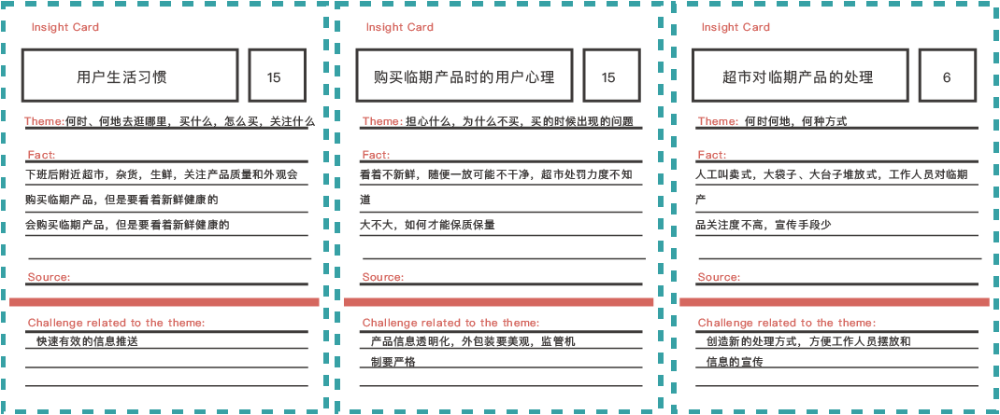
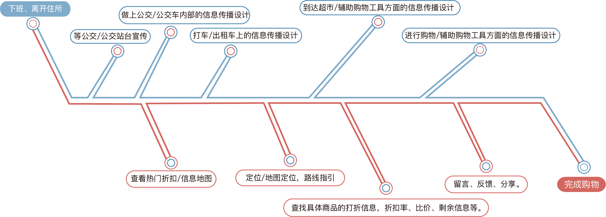
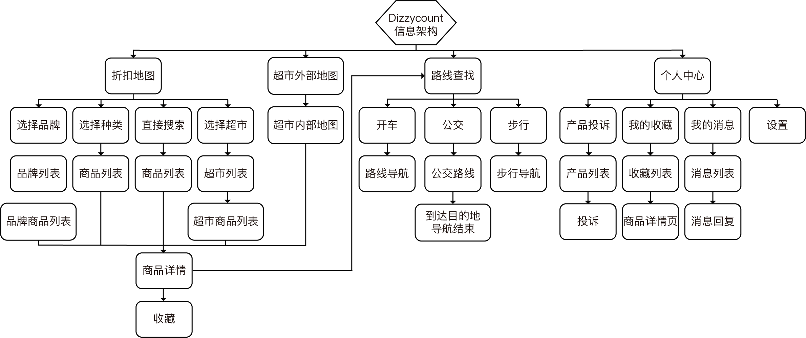

超市时常面临如何解决临期食品的问题，食品仍然可用，且毫无质量问题，但是用户由于不知道此类信息，或者由于临期食品柜台摆放杂乱等等原因，导致临期食品被大量浪费。因此我们希望建立一个针对解决此类问题的平台，设计一个完整的临期食品售卖的服务体系，对于解决食物浪费具有很大的现实意义，
江南大学 | 2014.03
用户研究员，交互设计师
设计Diszzycount临期食品售卖平台
在实地调研前，先进行桌面调研，通过网络等各种方式搜集相关信息，梳理清楚技术可行性，商业模式，目标地点，目标人群等问题，并且明确实地调研时所要确认的问题和假设。

在调研过程中，我们与最终的目标用户进行了交谈，通过准备好的访谈脚本，与超市顾客以及超市用户展开访谈，理解用户的期待，想法与需求。

通过亲和图的方式从用户及超市的角度，来发散总结所有可能有联系的问题与需求。

总结用户问题，基于用户问题总结用户需求。

通过洞悉卡片来深入分析每一个需求背后用户所遇到的挑战和困难。
有了前期所有的研究结果，我们创建了两个角色以帮助我们运用同理心理解用户，帮助随后的设计工作，团队讨论，确保团队信息一致。

梳理好用户角色后，运用同理心，站在用户的角度来思考用户对于这样一个平台会怎么看，怎么做，怎么想，怎么感觉。

由于要设计的是整个服务系统，因此需要运用系统设计思维，从服务的开始到结束整体考虑用户旅程，并且思考在每一步用户会遇到怎样的问题，我们需要怎样帮助用户有最好的体验。

整个服务系统中要涉及到众多的人，事，物，场以及他们之间的交互，因此描绘系统图来梳理其中的关系显得尤为重要。

对在用户与服务系统会产生交互的每个节点进行设计，包含线上线下，界面与非界面的设计。
搭建整个APP的信息架构是开始设计的第一步，遵循APP的设计规范，符合用户的使用习惯，确保整体架构扁平，简单，易懂，无需学习成本。
基于信息架构，深入每一页进行细节的交互设计，包含哪些信息需要展现，信息主次，交互方式，交互流程等等。

根据所希望达成的产品调性，选择品牌主色，辅色，设计出符合目标用户审美需求的视觉样式。